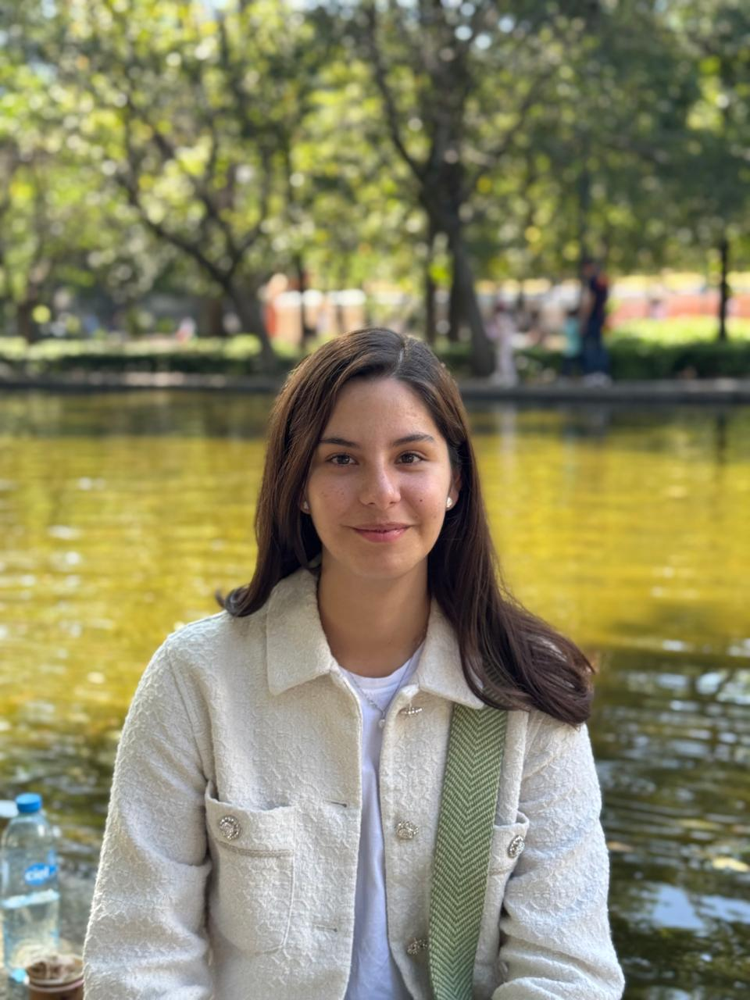

Biografía
Natalia Gómez Álvarez
Nací el 22 de abril de 2002 en CDMXSoy Natalia Gómez Álvarez. Nací el 22 de abril de 2002 en la Ciudad de México y mi familia está formada por mis papás y una hermana mayor, con quienes he aprendido el valor de la unión, el esfuerzo y el apoyo constante.
Desde maternal hasta preparatoria estudié en el Liceo Mexicano Japonés. Esta etapa fue clave para mí, porque me ayudó a desarrollar disciplina, respeto por distintas culturas y una forma de trabajar organizada. También fortalecí habilidades como la comunicación, el trabajo en equipo y la constancia.
Más adelante ingresé al ITAM para estudiar Ingeniería en Computación. Me interesa la tecnología por su capacidad de resolver problemas reales y crear soluciones útiles. Me motiva aprender, mejorar mis habilidades y aplicar lo que estudio en proyectos prácticos.
En mi tiempo libre disfruto mantenerme activa y equilibrar mi vida académica con actividades que me gustan. Me encanta el tenis y el pádel, pasar tiempo con mis perros (Yargo, Drako y Rolo) y practicar equitación. Estas actividades me ayudan a liberar estrés, mantener disciplina y disfrutar del día a día.
Intereses personales
- Tenis
- Pádel
- Mis perros
- Equitación
- Cine y películas

Metas a corto plazo
- Graduarme y realizar una maetsría en el extranjero
- Aprender francés o italiano
- Seguir aprendiendo programación con proyectos que tengan un verdadero impacto en el mundo